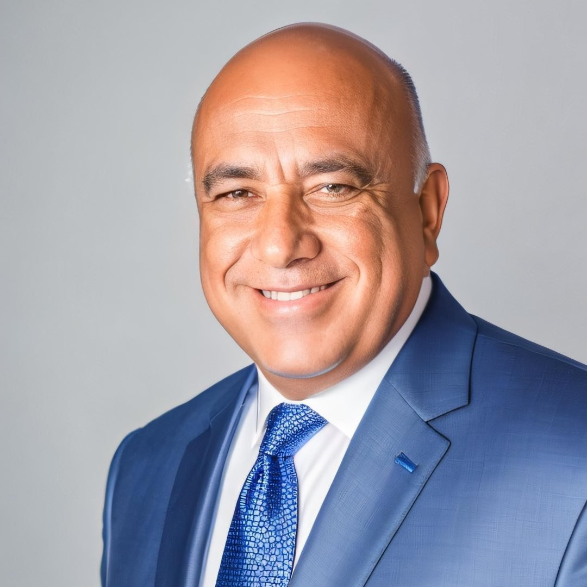

Investigación Privada · OSINT · Florida
Jiménez Investigaciones
La verdad no se adivina. Se investiga.

Investigador Principal
Luis Jiménez Camacho
Investigador Privado Licenciado · Florida
Décadas de experiencia en investigación privada, inteligencia de fuentes abiertas y obtención de evidencia legal. Formo parte de una tradición donde los hechos valen más que las opiniones y donde cada caso se trata con el rigor que merece un tribunal.
Áreas de Investigación
Servicios profesionales de investigación con metodología rigurosa y evidencia preparada para procesos legales.
Inteligencia de Amenazas
Monitoreo y alerta temprana sobre riesgos a personas, empresas y activos. OSINT aplicado a la protección preventiva.
Ver servicio →Protección de Marca
Detección de fraudes, suplantación de identidad corporativa, falsificaciones y uso no autorizado de su marca.
Ver servicio →Evaluación de Exposición
Análisis de la huella digital de personas y empresas: qué información sensible está expuesta y cómo protegerla.
Ver servicio →Investigación de Personas
Verificación de antecedentes, localización, validación de identidad y obtención de evidencia para procesos legales.
Ver servicio →OSINT Corporativo
Investigación digital para debida diligencia, verificación de socios comerciales e inteligencia competitiva legal.
Ver servicio →Whistleblower IRS
Apoyo investigativo para reportantes del programa de denuncias del IRS. Documentación con estándar federal.
Ver servicio →Cómo trabajamos
Un método riguroso, documentado y transparente. Cada paso deja huella para que la evidencia hable por sí sola.
Consulta inicial
Escuchamos su caso. Evaluamos viabilidad. Máxima confidencialidad desde el primer contacto.
Plan de investigación
Diseñamos la estrategia: fuentes, métodos, alcance y cronograma. Usted aprueba cada paso.
Ejecución
Desplegamos OSINT, investigación de campo y análisis. Todo documentado con cadena de custodia.
Expediente final
Entregamos un informe con hallazgos, evidencia y cronología — en lenguaje que entiende un juzgado.
"Cuando tienes un caso complejo, necesitas a alguien que entienda tanto el aspecto investigativo como el legal. Luis entiende ambos. Su trabajo fue impecable."
Hablemos de su caso
Toda conversación es confidencial. No hay compromiso. Si podemos ayudar, se lo diremos. Si no, también.
Solicitar una consulta